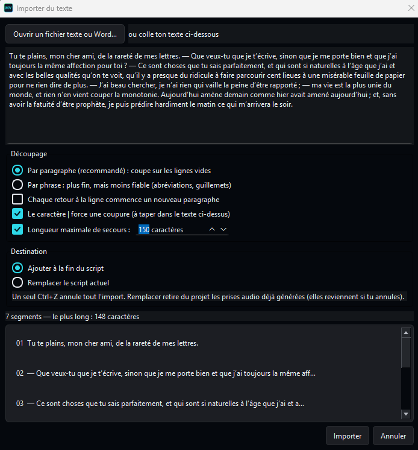
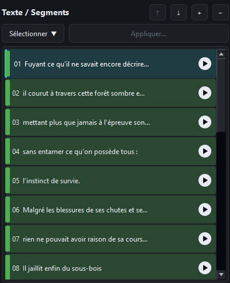
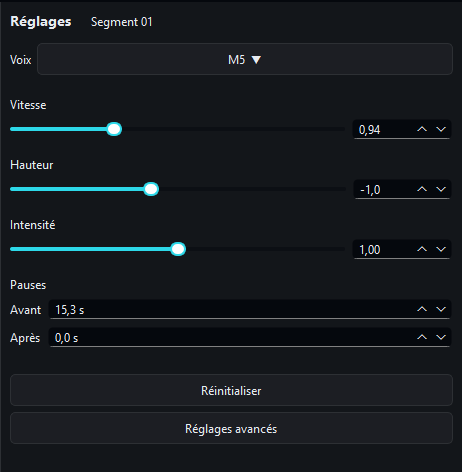
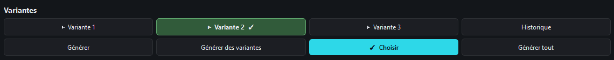
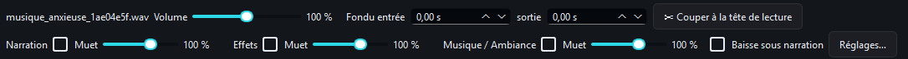

Application Windows · Bêta
Transforme un texte en narration, sur ton ordinateur.
MinesyVoice découpe ton texte en segments, donne une voix à chacun, puis te laisse monter le tout avec des effets et de la musique. Pensé pour les narrations de type livre audio.

Un projet de narration ouvert dans MinesyVoice : segments, réglages, puis timeline à trois pistes.
Visite guidée
Écrire, régler, écouter, monter.
Le travail se fait en quatre temps, dans la même fenêtre.
Importe ou colle ton texte
Ouvre un fichier .txt, .md ou .docx, ou colle ton texte directement. Il est découpé par paragraphe (recommandé) ou par phrase, et l'aperçu des segments se met à jour en direct.
Tu peux forcer une coupure à l'endroit de ton choix avec le caractère |, par exemple pour séparer un dialogue de la narration. Choisis ensuite d'ajouter le texte à la fin du script ou de le remplacer. Un seul Ctrl+Z annule tout l'import.


Ton texte, segment par segment
Chaque segment a sa ligne et son bouton d'écoute. La barre verte indique que l'audio est à jour avec le texte et les réglages.

Des réglages pour chaque segment
Dix voix au choix, puis vitesse, hauteur (jusqu'à six demi-tons, au dixième près), intensité et pauses. Un dialogue peut avoir une autre voix que la narration.

Générer un segment, des variantes, ou tout le texte
Générer
Génère le segment sélectionné avec ses réglages, et tu l'écoutes aussitôt.
Des variantes
Trois prises du même segment. Écoute chaque variante, puis « Choisir » garde celle qui te plaît. Les prises restent dans l'historique.
Générer tout
Tout le texte d'un coup, segment après segment. Les segments vides ou déjà à jour sont sautés. Tu peux aussi ne générer qu'une sélection, par exemple tous les dialogues.
Une timeline à trois pistes
La voix, les effets et la musique se mixent sur une vraie timeline. Place tes sons, déplace-les, rogne-les, ajoute des fondus. Tu peux aussi glisser un bloc de voix pour ajuster les pauses.

La musique s'efface quand la voix parle
Active « Baisse sous narration » sur la piste musique : elle descend d'elle-même sous la voix et remonte ensuite. Le niveau et la vitesse de la baisse se règlent. Chaque piste a son volume et sa sourdine, chaque son son volume et ses fondus.
Import simple
Texte collé, .txt, .md ou .docx. Sons en WAV, MP3, OGG ou FLAC.
Annulation partout
Ctrl+Z revient sur un texte, un réglage, un déplacement de son.
Export WAV ou MP3
Le mix complet, prêt pour une vidéo, un podcast ou un livre audio.
Écouter
Un extrait, tel que MinesyVoice le produit.
Voix de synthèse, avec une musique d'ambiance qui s'efface quand la voix parle. Rendu exporté directement depuis l'application.
Roman : Mademoiselle de Maupin
Texte : Théophile Gautier (domaine public). Musique : Beethoven, Sonate n° 14 « Clair de lune », enregistrement Musopen (domaine public, via Wikimedia Commons).
Voix générée par IA (Supertonic).
Version bêta
Ce qu'il faut savoir avant de l'essayer.
- Voix en français uniquement Dix voix préréglées, pas de clonage de voix.
- Rendu peu expressif C'est une voix de synthèse, pas un comédien.
- Court temps de préparation avant l'écoute La timeline est calculée avant chaque lecture.
- Windows uniquement Pas de version Mac ou Linux pour le moment.
- Une prononciation parfois à corriger Une liaison ou un mot peut sonner faux. Écris-le comme tu veux l'entendre, même avec une faute : « teu » pour « te », par exemple.
- Pas de rires ni de soupirs Les balises d'émotion sont lues à voix haute au lieu d'être jouées.
Télécharger
Gratuit, sans compte.
L'application se télécharge en dossier compressé. Au premier lancement, MinesyVoice télécharge le modèle vocal (environ 400 Mo). Ensuite, la synthèse se fait entièrement sur ton ordinateur.
MinesyVoice 0.1.0 (bêta)
Windows 10 ou 11 (64 bits). Un processeur suffit, aucune carte graphique n'est nécessaire. Notes de version
- Décompresse le dossier téléchargé.
- Lance MinesyVoice.exe.
- Patiente au premier démarrage, le temps du téléchargement du modèle.
Windows peut afficher un avertissement, car l'application n'est pas encore signée : clique sur « Informations complémentaires », puis « Exécuter quand même ».